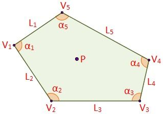

Los polígonos son figuras planas, cerrada, formados por segmentos, llamados lados.
Elementos de un polígono
En un Polígono podemos destacar los siguientes elementos:
-
Lados.
Es cada uno de los segmentos que forman el polígono.
-
Vértices. El único punto común de cualquiera de los dos lados consecutivos.
-
Diagonales. Son los segmentos de recta que unen dos vértices no consecutivos.
Polígono Irregular
Un polígono irregular es un polígono con los lados y ángulos desiguales.
Elementos del polígono irregular
Se pueden distinguir algunos elementos del polígono irregular:

- Punto interior (P): es cualquier punto que está dentro del perímetro del polígono
irregular.
- Lados (Li): son los n segmentos que delimitan al polígono.
- Vértices (Vi): puntos de unión de dos lados. Existen tantos vértices
como lados tiene el polígono (n).
- Ángulos interiores (αi): ángulos interiores de la unión de dos
lados consecutivos.
Polígono Regular
Un polígono regular es el que tiene sus lados iguales y sus angulos iguales.